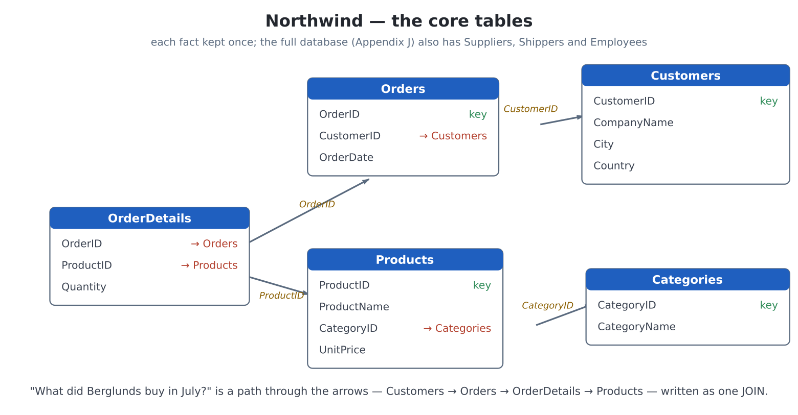

Chapter 12 taught your programs to remember by writing files, and you
have leaned on that ever since — high scores, saved worlds,
prefs.txt. Files are perfect for a handful of lines. But
the moment data grows rows and questions — “which
customer spent the most?”, “show me every order in July, newest first” —
reading the whole file and sifting it by hand in Python turns into a
chore, and a slow one.
There is a better tool, and this machine has it built in: a
database. Specifically SQLite, the
same engine inside your phone, your browser and aeroplanes — here as the
usqlite module. You keep data in tables,
and you ask for exactly what you want in SQL, a small
language for questions. The database does the searching, sorting and
sums; you get back just the answer. By the end of the chapter you will
have built a point-and-click business database — Part V’s GUI from
chapter 27, now with a real engine behind it.
A database lives in a single file. Open one and it is yours; open it
again next week and everything is still there. At the
>>> prompt:
>>> import usqlite
>>> db = usqlite.connect("/sd/first.db")
>>> db.execute("CREATE TABLE pets(name TEXT, legs INTEGER)")
>>> db.execute("INSERT INTO pets VALUES ('Rex', 4)")
>>> db.execute("INSERT INTO pets VALUES ('Kea', 2)")
>>> for row in db.execute("SELECT * FROM pets"):
... print(row)
...
('Rex', 4)
('Kea', 2)Six lines and you have a working database on the SD card. Unpick them, because every one is a whole idea:
connect opens (or, the first time,
creates) the file and hands back a connection — your handle to
the database, like open in chapter 12 but for a whole file
of tables.CREATE TABLE declares a table’s shape
once: named columns, each with a type
(TEXT, INTEGER, REAL). A table is
a grid — columns across, one row per thing.INSERT adds a row.
SELECT asks for rows back;
SELECT * means “every column”. The words in capitals are
SQL, not Python — you are speaking to the database through
Python.execute hands back a cursor — a
pointer at the results. For CREATE and INSERT
there are none, so we ignore it; for SELECT you loop over
it and each row arrives as a tuple.And the quiet miracle: you never wrote a save. Every
statement is committed the instant it runs — pull the power
after that last INSERT and Kea is still there tomorrow.
(When you have many rows to add at once, that per-row saving is
slow; the project below shows the one-line fix.)
Coming from MMBasic: this is genuinely new ground. The Micromite stored data in arrays and flat files, or
VAR SAVEfor a few globals — there was no query language. SQL is a different way of thinking: you describe what you want, not how to loop for it, and the engine works out the rest.
You will often insert values that live in variables. The temptation is to build the SQL string yourself:
>>> name = "Rex"
>>> # DON'T: gluing the value into the SQL by hand
>>> db.execute("INSERT INTO pets VALUES ('" + name + "', 4)")It works — until a name contains an apostrophe. "O'Hara"
closes the quote early and the statement becomes gibberish; a
mischievous name could rewrite your query entirely (this is the
famous “SQL injection” bug). The cure is a placeholder:
write ? in the SQL and pass the values separately, and the
database inserts them safely, quotes and all:
>>> db.execute("INSERT INTO pets VALUES (?, ?)", ("O'Hara", 4))
>>> db.execute("SELECT * FROM pets WHERE name = ?", ("O'Hara",))The values go in a tuple, one per ?. Make this a reflex:
every value from a variable, a file or a human goes in through
? — never glued into the string. It is shorter, it
is safe, and from here on every query in the chapter uses it.
Remember chapter 12’s scorelib.py, keeping your games’
high scores in a text file — reading it all in, splitting each line,
sorting by hand? Here is the same job as a database, and watch how much
work moves out of your code and into SQL.
edit("scores.py"):
import usqlite
DB = "/sd/scores.db"
def open_db():
con = usqlite.connect(DB)
con.execute("CREATE TABLE IF NOT EXISTS"
" scores(name TEXT, score INTEGER)")
return con
def add(con, name, score):
con.execute("INSERT INTO scores VALUES (?, ?)",
(name, score))
def top(con, n=10):
return con.execute(
"SELECT name, score FROM scores"
" ORDER BY score DESC LIMIT ?", (n,)).fetchall()
con = open_db()
name = input("Name: ")
score = int(input("Score: "))
add(con, name, score)
print("--- HIGH SCORES ---")
for i, (nm, sc) in enumerate(top(con), 1):
print("%2d. %-8s %6d" % (i, nm, sc))
con.close()Run it a few times with different names and scores; the board fills up and stays filled between runs. The lessons:
CREATE TABLE IF NOT EXISTS is the
honest way to open a database that may or may not exist yet: make the
table the first time, do nothing every time after. No more chapter 13
try around a missing file.ORDER BY score DESC sorts highest-first;
LIMIT ? keeps the top n. Chapter 12 did this
with sorted(..., reverse=True)[:10] and the
parsing that fed it — here the engine does the lot, over thousands of
rows, in an instant..fetchall() drains the cursor into a
plain list of tuples, so top() can hand the results back
and close over nothing — an ordinary function returning ordinary
data.SELECT is where a database earns its keep. Everything
narrows or reshapes the rows before they reach you. A quick
tour, against the pets table:
>>> # only some rows
>>> db.execute("SELECT name FROM pets WHERE legs = 4").fetchall()
[('Rex',), ("O'Hara",)]
>>> # a fuzzy match: names containing 'e'
>>> db.execute("SELECT name FROM pets"
... " WHERE name LIKE '%e%'").fetchall()
[('Rex',), ('Kea',)]WHERE filters; LIKE '%e%' matches any text
with an e in it (% is “anything here”). And
the database can compute over the whole table without handing
you a single row — the aggregate functions:
>>> db.execute("SELECT count(*) FROM pets").fetchone()
(3,)
>>> db.execute("SELECT sum(legs), max(legs) FROM pets").fetchone()
(10, 4)count, sum, avg,
min, max — the questions a spreadsheet
answers, asked in SQL. .fetchone() takes just the first
row, which is all an aggregate produces. Pair them with
GROUP BY and you get one answer per
group — “how many pets have each leg-count?”:
>>> db.execute("SELECT legs, count(*) FROM pets"
... " GROUP BY legs").fetchall()
[(2, 1), (4, 2)]Two-legged: one. Four-legged: two. That single line replaces a dictionary, a loop and a running tally — chapter 10’s counting pattern, handed to the engine.
Real data comes in related pieces. An order belongs to a customer; an order line names a product. You could cram it all into one wide table, repeating the customer’s name and city on every order — but then a change of address means editing a hundred rows, and a typo in one is a lie. The database way is to keep each fact once, in its own table, and link them by an id:

To answer a real question you walk the links, and SQL’s word for
walking a link is JOIN: “match each row
here to its row there”. These are the tables the project builds in a
moment — which order lines are on order 10249, and what are they
called?
>>> db.execute(
... "SELECT p.ProductName, d.Quantity"
... " FROM OrderDetails d"
... " JOIN Products p ON p.ProductID = d.ProductID"
... " WHERE d.OrderID = 10249").fetchall()
[('Tofu', 9), ('Carnarvon Tigers', 40)]Read the JOIN as glue: for each row of
OrderDetails, find the Products row whose
ProductID matches, and let me use its columns too. The
short names d and p (table
aliases) keep it readable. Join three tables and you
can go from a customer straight to the products they bought — which is
exactly what the project does next.
Time to put it together. Northwind is Microsoft’s
long-serving sample database — a fictional food importer’s customers,
products and orders — and the machine ships a working version of it in
the northwind/ folder: eight tables (the five from the
diagram plus Suppliers, Shippers and Employees), a few dozen products
and orders, and a pcgui browser over the top. Pick a
customer to see their orders; pick an order to see what was on it and
what it cost; press a button for a whole-database report.
It comes in three files, and they map onto the three things this
chapter has taught. nwdata.py holds the
schema and the seed data and builds the database on first run — the
plumbing, printed in full in Appendix J.
nwquery.py is the questions and
northwind.py is the screen. Those last two
are the program proper, so here they are.
Every function takes the open connection and hands back a list of
tuples — exactly the shape the screen wants. This is the chapter’s whole
argument in one file: each answer is a sentence of SQL, not a page of
loops. edit("nwquery.py"):
# Northwind -- the queries.
#
# Every function takes an open connection (from nwdata.open_db)
# and returns a list of plain tuples, so the same code runs on
# device (usqlite) and on a PC (sqlite3). The column order each
# one returns is noted above it; northwind.py relies on those
# orders. This is where the database earns its keep: joins and
# GROUP BY aggregates that would be a tangle of loops and
# dictionaries done by hand.
#
# All user values go in through ? parameters, never built into
# the SQL string -- that keeps a name like O'Brien (or a
# malicious one) from breaking, or rewriting, the query.
def customers(con, like=""):
"""CustomerID, CompanyName, City, Country -- optionally
filtered by a name/city fragment. Alphabetical."""
if like:
pat = "%" + like + "%"
cur = con.execute(
"SELECT CustomerID, CompanyName, City, Country"
" FROM Customers"
" WHERE CompanyName LIKE ? OR City LIKE ?"
" ORDER BY CompanyName", (pat, pat))
else:
cur = con.execute(
"SELECT CustomerID, CompanyName, City, Country"
" FROM Customers"
" ORDER BY CompanyName")
return cur.fetchall()
def products(con, like=""):
"""ProductID, ProductName, CategoryName, UnitPrice,
UnitsInStock -- joins Products to Categories so each row
carries its category's name."""
if like:
pat = "%" + like + "%"
cur = con.execute(
"SELECT p.ProductID, p.ProductName, c.CategoryName,"
" p.UnitPrice, p.UnitsInStock"
" FROM Products p"
" JOIN Categories c ON c.CategoryID = p.CategoryID"
" WHERE p.ProductName LIKE ?"
" ORDER BY p.ProductName", (pat,))
else:
cur = con.execute(
"SELECT p.ProductID, p.ProductName, c.CategoryName,"
" p.UnitPrice, p.UnitsInStock"
" FROM Products p"
" JOIN Categories c ON c.CategoryID = p.CategoryID"
" ORDER BY p.ProductName")
return cur.fetchall()
def orders_for_customer(con, customer_id):
"""OrderID, OrderDate, EmployeeName, Shipper, OrderTotal --
one row per order for the customer. The total is summed from
the order's lines with a correlated sub-query -- price times
quantity, less discount, all in SQL."""
return con.execute(
"SELECT o.OrderID, o.OrderDate,"
" e.FirstName || ' ' || e.LastName AS Employee,"
" s.CompanyName AS Shipper,"
" (SELECT sum(d.UnitPrice * d.Quantity"
" * (1 - d.Discount))"
" FROM OrderDetails d"
" WHERE d.OrderID = o.OrderID) AS Total"
" FROM Orders o"
" JOIN Employees e ON e.EmployeeID = o.EmployeeID"
" JOIN Shippers s ON s.ShipperID = o.ShipVia"
" WHERE o.CustomerID = ?"
" ORDER BY o.OrderDate", (customer_id,)).fetchall()
def order_lines(con, order_id):
"""ProductName, UnitPrice, Quantity, Discount, LineTotal --
the items on one order, joining each line to its product for
the name."""
return con.execute(
"SELECT p.ProductName, d.UnitPrice, d.Quantity,"
" d.Discount,"
" d.UnitPrice * d.Quantity * (1 - d.Discount)"
" AS LineTotal"
" FROM OrderDetails d"
" JOIN Products p ON p.ProductID = d.ProductID"
" WHERE d.OrderID = ?"
" ORDER BY p.ProductName", (order_id,)).fetchall()
# --- the reports: aggregates across the whole database ---------
def top_products(con, n=10):
"""ProductName, UnitsSold, Revenue -- best sellers by
revenue. GROUP BY the product, SUM the money, ORDER BY it
descending, keep the top n."""
return con.execute(
"SELECT p.ProductName,"
" sum(d.Quantity) AS Units,"
" sum(d.UnitPrice * d.Quantity"
" * (1 - d.Discount)) AS Revenue"
" FROM OrderDetails d"
" JOIN Products p ON p.ProductID = d.ProductID"
" GROUP BY p.ProductID"
" ORDER BY Revenue DESC"
" LIMIT ?", (n,)).fetchall()
def sales_by_category(con):
"""CategoryName, Revenue -- three tables joined
(details -> products -> categories), grouped by category."""
return con.execute(
"SELECT c.CategoryName,"
" sum(d.UnitPrice * d.Quantity"
" * (1 - d.Discount)) AS Revenue"
" FROM OrderDetails d"
" JOIN Products p ON p.ProductID = d.ProductID"
" JOIN Categories c ON c.CategoryID = p.CategoryID"
" GROUP BY c.CategoryID"
" ORDER BY Revenue DESC").fetchall()
def sales_by_employee(con):
"""EmployeeName, Orders, Revenue -- who sold how much.
Counts each employee's orders and sums their value across
three joined tables."""
return con.execute(
"SELECT e.FirstName || ' ' || e.LastName AS Employee,"
" count(DISTINCT o.OrderID) AS Orders,"
" sum(d.UnitPrice * d.Quantity"
" * (1 - d.Discount)) AS Revenue"
" FROM Employees e"
" JOIN Orders o ON o.EmployeeID = e.EmployeeID"
" JOIN OrderDetails d ON d.OrderID = o.OrderID"
" GROUP BY e.EmployeeID"
" ORDER BY Revenue DESC").fetchall()
def low_stock(con, threshold=15):
"""ProductName, UnitsInStock, SupplierName -- items at or
below the threshold, with who to reorder from. A WHERE
filter plus a join."""
return con.execute(
"SELECT p.ProductName, p.UnitsInStock, s.CompanyName"
" FROM Products p"
" JOIN Suppliers s ON s.SupplierID = p.SupplierID"
" WHERE p.UnitsInStock <= ?"
" ORDER BY p.UnitsInStock", (threshold,)).fetchall()Read orders_for_customer and top_products
especially. The first joins three tables — orders to employees to
shippers — and totals each order with a correlated
sub-query (the inner SELECT runs once per order,
summing that order’s lines). The second groups every line by product
across the whole database and sorts by revenue. Both would be a tangle
of nested loops and running totals done by hand; here each is a few
lines and the engine does the sifting. And every one takes its variable
through a ? — the golden rule, kept.
main() is chapter 27, almost unchanged: a
pcgui manager, controls with callbacks, a
poll() loop. The one new idea is wiring a list to a
query — picking a customer runs
orders_for_customer and re-fills the orders list; picking
an order runs order_lines; a report button fills the same
list from top_products or friends. The GUI is a window
onto the database, storing nothing itself: exactly chapter 27’s
“controls are a view of the data, never its home”.
edit("northwind.py"):
# Northwind Traders -- a database browser for the Pico
# Computer 3.
#
# Puts the machine's two headline features together: the
# on-device SQLite engine (usqlite) holding a small Northwind-
# style business database, and the pcgui toolkit drawing a
# point-and-click front end over it.
#
# run("/sd/northwind/northwind.py")
#
# Pick a customer to see their orders; pick an order to see its
# line items and total. The buttons along the bottom run whole-
# database reports. The first run builds and seeds the database
# (a second or two); after that it opens instantly and survives
# power-offs. Needs a USB mouse or touch panel; the Find box
# also takes the keyboard.
import sys
import time
# Make the sibling modules (nwdata, nwquery) importable however
# this file is launched. run() chdirs into the program's folder
# so a plain import usually works, but opening it from the editor
# does not -- so add our own folder to the search path.
try:
_here = __file__.rsplit("/", 1)[0]
if _here and _here not in sys.path:
sys.path.insert(0, _here)
except NameError:
pass
import pcgui
from pcgfx import WHITE, YELLOW, CYAN, RED, GOLD, COBALT, LITEGRAY
import nwdata
import nwquery
# --- text helpers (%-formatting: solid on MicroPython) --------
def fit(s, n):
"""Left-justify s into exactly n characters (truncating if
need be)."""
s = str(s)
if len(s) >= n:
return s[:n]
return s + " " * (n - len(s))
def money(x):
return "%.2f" % (x or 0.0)
def pick_path():
"""Prefer the SD card; fall back to flash if there's none."""
import os
try:
os.stat("/sd")
return "/sd/northwind.db"
except OSError:
return "/northwind.db"
class Northwind:
def __init__(self, g, con):
self.g = g
self.con = con
self.done = False
self.cust_rows = [] # rows behind lbCust
self.order_rows = [] # rows behind lbOrders
# --- build the screen -------------------------------------
def build_ui(self):
g = self.g
g.caption(8, 8, "NORTHWIND TRADERS", fg=YELLOW, font=2)
g.caption(360, 12, "on-device SQLite + GUI",
fg=LITEGRAY, font=1)
g.button(556, 6, 76, 24, "EXIT", fg=WHITE, bg=RED,
callback=self.on_exit)
# search row
g.caption(8, 40, "Find", fg=WHITE, font=1)
self.tbFind = g.textbox(48, 34, 170, 22, text="",
callback=self.on_find)
g.button(224, 34, 60, 22, "Clear",
callback=self.on_clear)
# dynamic headers (displayboxes repaint cleanly)
self.dbCustHdr = g.displaybox(8, 64, 250, 20,
"Customers", fg=CYAN)
self.dbOrdHdr = g.displaybox(266, 64, 366, 20,
"Orders", fg=CYAN)
# the two master lists
self.lbCust = g.listbox(8, 88, 250, 216, [], font=1,
callback=self.on_cust)
self.lbOrders = g.listbox(266, 88, 366, 216, [], font=1,
callback=self.on_order)
# detail header + running total, then the detail list
self.dbDetHdr = g.displaybox(8, 314, 476, 20,
"Order lines", fg=CYAN)
self.dbTotal = g.displaybox(492, 314, 140, 20,
"Total: 0.00", fg=GOLD)
self.lbDetail = g.listbox(8, 338, 624, 104, [], font=1)
# report bar
g.button(8, 448, 150, 26, "Top Products",
bg=COBALT, callback=self.rep_top)
g.button(166, 448, 150, 26, "By Category",
bg=COBALT, callback=self.rep_cat)
g.button(324, 448, 150, 26, "By Employee",
bg=COBALT, callback=self.rep_emp)
g.button(482, 448, 150, 26, "Low Stock",
bg=COBALT, callback=self.rep_stock)
# --- filling the lists ------------------------------------
def _set_list(self, lb, items):
lb.items = items
lb.top = 0
lb._value = 0
lb.draw()
def load_customers(self, like=""):
self.cust_rows = nwquery.customers(self.con, like)
# "Company (City)" per row
items = ["%s (%s)" % (r[1], r[2])
for r in self.cust_rows]
self._set_list(self.lbCust, items)
self.dbCustHdr.value = ("Customers (%d)"
% len(self.cust_rows))
# show the first customer's orders, or clear if none
if self.cust_rows:
self.show_orders(0)
else:
self._set_list(self.lbOrders, [])
self.order_rows = []
self.dbOrdHdr.value = "Orders"
self.clear_detail()
def show_orders(self, idx):
# cust: (id, company, city, country)
cust = self.cust_rows[idx]
self.order_rows = nwquery.orders_for_customer(
self.con, cust[0])
# row: (OrderID, OrderDate, Employee, Shipper, Total)
items = ["#%d %s %s %s"
% (r[0], r[1], fit(money(r[4]), 9), r[2])
for r in self.order_rows]
self._set_list(self.lbOrders, items)
self.dbOrdHdr.value = ("Orders for %s (%d)"
% (cust[1], len(self.order_rows)))
if self.order_rows:
self.show_lines(0)
else:
self.clear_detail()
def show_lines(self, idx):
# order: (id, date, emp, shipper, total)
order = self.order_rows[idx]
lines = nwquery.order_lines(self.con, order[0])
# row: (ProductName, UnitPrice, Quantity, Discount,
# LineTotal)
items = ["%s %3d x %8s -%2.0f%% = %9s"
% (fit(r[0], 28), r[2], money(r[1]),
r[3] * 100, money(r[4]))
for r in lines]
self._set_list(self.lbDetail, items)
self.dbDetHdr.value = ("Order #%d - %d line(s)"
% (order[0], len(lines)))
self.dbTotal.value = "Total: %s" % money(order[4])
def clear_detail(self):
self._set_list(self.lbDetail, [])
self.dbDetHdr.value = "Order lines"
self.dbTotal.value = "Total: 0.00"
def _report(self, title, items):
self.dbDetHdr.value = title
self.dbTotal.value = ""
self._set_list(self.lbDetail, items)
# --- control callbacks ------------------------------------
def on_cust(self, lb):
if self.cust_rows:
self.show_orders(lb.value)
def on_order(self, lb):
if self.order_rows:
self.show_lines(lb.value)
def on_find(self, tb):
self.load_customers(tb.value.strip())
def on_clear(self, b):
self.tbFind.value = ""
self.load_customers("")
def rep_top(self, b):
rows = nwquery.top_products(self.con, 12)
items = ["%s units %4d revenue %10s"
% (fit(r[0], 30), r[1], money(r[2]))
for r in rows]
self._report("Top products by revenue", items)
def rep_cat(self, b):
rows = nwquery.sales_by_category(self.con)
items = ["%s revenue %10s"
% (fit(r[0], 20), money(r[1]))
for r in rows]
self._report("Sales by category", items)
def rep_emp(self, b):
rows = nwquery.sales_by_employee(self.con)
items = ["%s orders %2d revenue %10s"
% (fit(r[0], 22), r[1], money(r[2]))
for r in rows]
self._report("Sales by employee", items)
def rep_stock(self, b):
rows = nwquery.low_stock(self.con, 15)
items = ["%s stock %3d reorder from %s"
% (fit(r[0], 28), r[1], r[2])
for r in rows]
self._report("Low stock (15 or fewer)", items)
def on_exit(self, b):
self.done = True
def main():
print("Opening Northwind database (first run builds it)...")
con = nwdata.open_db(pick_path())
ver = con.execute("SELECT sqlite_version()").fetchone()[0]
print("SQLite", ver, "ready")
screen(hdmi.RGB640)
time.sleep(3) # let the monitor re-lock
console("serial")
hdmi.fb().fill(0)
g = pcgui.GUI()
g.start()
app = Northwind(g, con)
app.build_ui()
app.load_customers()
try:
while not app.done:
g.poll()
time.sleep_ms(10)
finally:
g.stop()
console()
con.close()
print("Northwind closed")
if __name__ == "__main__":
main()Copy the northwind/ folder to /sd and run
it:
>>> run("/sd/northwind/northwind.py")Everything in this chapter is standing behind that one screen. When
you click a customer and their orders and totals appear instantly, that
is a three-table JOIN and a GROUP BY running
on the same chip that draws the window — a real database and a real
interface, meeting on a machine that fits in your hand.
scores.py a per-game board: add a
game TEXT column, ask for the game name too, and change
top() to take a game and add WHERE game = ?.
One column, one clause — a feature that would have been a rewrite with
files.OrderDetails → Orders → Customers, then
GROUP BY Country), wired to a new button in the
rep_* style. Three tables, one answer — the pattern every
business report is made of.>>> prompt
(experiment 4 shows how to open the database):
DELETE FROM OrderDetails WHERE OrderID = ?, and
UPDATE Products SET UnitPrice = ? WHERE ProductID = ?.
Re-run a report and watch the totals move — the database is
live, not a snapshot.>>> prompt:
import sys; sys.path.append("/sd/northwind"), then
import nwdata,
con = nwdata.open_db("/sd/northwind.db"), and write a
SELECT — the busiest month, the customer in the most
countries, whatever you’re curious about. This is what a database is
for.Books, Authors, and a Loans table
recording who has what out. A GUI that lists books, shows an author’s
whole shelf on a click, and a button for “everything currently on loan”
(a JOIN where the return date is NULL). You
have just re-invented what every library runs.textbox (chapter 27’s pop-up keyboard) that filters as you
type, feeding what you type into WHERE ProductName LIKE ?
with % around it. The real northwind.py does
exactly this — build it yourself first, then compare.readings table, forever. Then a second
program that plots the last hour with the maths lab (chapter 31). Days
of data in a file that never needs emptying, and SQL to slice it any way
you ask..csv file (chapter 12’s writing, one row per
line, commas between) so a day’s orders can leave the machine for a
spreadsheet. A database that can’t share is an island; give yours a
bridge.